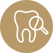

療程項目
一般牙科保健General Dentistry
從日常檢查開始，守住長期口腔健康
一般牙科保健涵蓋定期檢查、洗牙、蛀牙治療、補牙與口腔衛教，是預防牙周病、蛀牙與複雜治療的第一道防線。
定期
口腔檢查
預防
洗牙衛教
家庭
全齡照護

療程介紹
了解一般牙科保健，選擇合適治療
一般牙科保健涵蓋定期檢查、洗牙、蛀牙治療、補牙與口腔衛教，是預防牙周病、蛀牙與複雜治療的第一道防線。
生活牙醫會依照每位患者的口腔條件、期待、預算與長期維護需求，安排完整檢查與醫師說明。療程開始前會先釐清適合對象、可能限制與替代方案，讓治療計畫更透明。
實際治療方式與時間會因牙齒狀況、牙周健康、咬合、生活習慣與全身病史而異，建議以現場醫師診斷為準。

定期檢查
及早發現蛀牙、牙周發炎與假牙問題
洗牙與衛教
清除牙結石並調整個人清潔方式
蛀牙補綴
依蛀牙範圍選擇合適補牙或修復方式
全齡照護
提供成人、長輩與兒童的基礎口腔照護建議
療程流程
從評估到穩定追蹤
每個療程都會先確認口腔基礎條件，再依診斷結果安排合適步驟與回診節奏。
初診問診
確認一般牙科保健需求、病史與口腔狀況，先建立治療方向。
口腔與 X 光檢查
收集影像、掃描或口腔紀錄，讓醫師能更完整判斷。
洗牙或急症處理
依檢查結果說明治療方式、期程、限制與替代方案。
治療計畫說明
依計畫執行治療，過程中持續確認舒適度與穩定度。
定期回診追蹤
完成後安排清潔照護與回診追蹤，維持長期成果。
常見問題
一般牙科保健療程FAQ
整理諮詢時常見的問題，協助您在看診前先掌握基本方向。
一般建議每半年定期洗牙與檢查一次；若牙周病、矯正中或清潔較困難，可能需要更密集追蹤。
需要。早期蛀牙、牙周病或假牙不密合不一定會痛，定期檢查能更早發現問題。
可能。補牙邊緣若清潔不佳仍可能再次蛀牙，需維持清潔並定期檢查。
開始您的一般牙科保健評估
想建立穩定的口腔保健節奏，可以先預約定期檢查與洗牙，由醫師協助規劃後續照護。